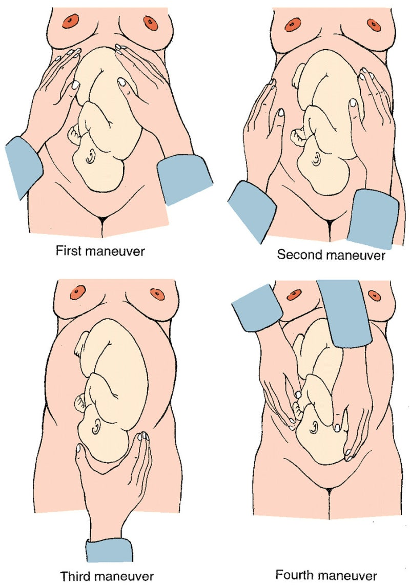

O | 언제 임신반응검사 → 소변키트 확실한 두줄 마지막월경일 → 예정일(월-3/+9, 일+7) [증상있음] 언제부터 증상 발생 | |
C (=여성) | 산모평가 | 키/체중/혈액형(아빠도, Rh도!) |
| 월경력 | (규칙+주기+기간)+양+통증 |
| 피임 | 원하는 임신/피임중?-방식 |
| 산과력 | 만-조-유-생 : 조산(37↓), 출산 방법도 조/유는 몇주차에 그랬는지+이유도 |
| 이전 문제 | 임신중+출산시+아이 유전병/선천기형 |
| 예방접종 | 3개월전-풍진+B형간염 완료 |
A | 유산/박리/파수 | ① 질 분비물/출혈-> 색/양상/통증 ② 하복부 통증-> 어디/심함/주기적 |
| 입덧 | 메스꺼움 /구토/ 속쓰림 |
| 갑상샘항진 | 두근거림+더위못참+체중감소 |
| 전자간증 | 두통+어지럼+시야장애 호흡곤란+거품뇨 |
| 당뇨 | 다음/다뇨/다갈+부종 |
E | ① 건강검진+자궁경부검사 ② 산전진찰-얼마나자주/왜안함 | |
외 | 부인과 시술, 6개월 내 X-ray,CT | |
과 | HTN/DM/갑상샘+뇌전증 알러지+성교통/성병 | |
약 | 피임약 | |
사 | 술담커+직업:어린아이 돌보기? (+여행,동물) | |
가 | 선천성 기형/유전질환 | |
여 | X | |
41.산전진찰
산모 몸상태 | 입덧 | 구역/구토 | 전해질검사-> 탈수시 수액 |
| 고령임신 | 35세이상 | 선별검사 X 융모막 융포 표본채취/양수천자 |
| 임신 고혈압 전자간증 | 부종 두통 시력변화 Rt 상복부 통증 | CBC+소변+간기능 혈압·심박수를 낮추고 경련예방약 ( hydralazine/labetalol/황산마그네슘). 필요시 유도분만 |
|
| 임신고혈압: 20주 이후+ 140/90 +단백뇨x+출산후 정상화 전자간증: 임신고혈압+단백뇨/전신증상-두통,시야,경련 ➔ 출산 후 호전되지만, 완전히 정상화X or 만성 고혈압 가능 | |
| 임신 당뇨 | 소변검사 당 | 경구 당부하검사+당화혈색소 당을 먹고 혈당이 얼마나 오르는지 |
|
| → 출산 후 대부분 호전/ 재발·진행 가능성 있 →산후 혈당 추적검사 | |
출산 |
태반조기박리 전치태반 | 과도한 질출혈 ->복통 있 ->복통 없 | CBC+질초음파+복부초음파 수혈/ 응급제왕절개 |
| 조기양막파수 조기산통 | 질분비물 조기+규칙적 산통 | 자궁경부검사 니트라진 :질 분비물이 양수인지 확인 NST: 아기 심박수와 움직임을 확인 |
| 유산 | 질출혈 [절박유산] 임신 전반기+자궁개대 없 + 혈성 질분비물/질출혈 | 질초음파+혈중 hCG+혈청FSH 계류유산: 태아사망->자궁소파수술 계류유산은 아기가 자라지 않고 자궁 안에 남아 있는 상태 이를 제거하기 위해 마취 후 자궁소파술: 자궁 안을 깨끗이 비우는 |

1. 신체진찰 | 2. 산부인과 검진 | |||||||
눈 | 결막 공막 [전자간증] 시야검사 | 정상분만 진행단계 | 레오폴드
| Fundal: 자궁윤곽+저부 | Umbilical: 자궁 옆면 | Pawlicks : 자궁 하부 | Pelvic: 태아 선진부 | |
입 | 탈수(점막) |
|
|
자궁 가장 윗부분 |
옆구리 |  치골결합 근처 |
임산부 머리쪽에 서기 양쪽 다시촉진 | |
목 | 갑상샘 |
|
|
|
|
|
| |
사지 | 피부긴장도+부종 |
|
|
|
|
|
| |
복부 | 시-청-타-촉 1분기) 복부 2/3분기) 모형이면 레오폴드 바로 |
|
|
|
|
|
| |
1분기 ~14주 2분기 ~28주 3분기 29~출산 |
| 결과 | 머리: 딱딱,몸통따로 움직 엉덩이:부드럽,몸통같이 | 등: 평평 부드럽 사지: 울퉁불퉁(무릎) | 머리 고정되어 안들림 ⇨ engage | Cephalic : 머리 골반쪽 Breech : 발이 골반 | ||
|
| 도플러 | ① 도플러 초음파 키기 ② 초음파 잘 되는지 내 맥박-손목에 대보기 ③ 태아 머리 부분 가까운 등쪽에 송수신기 (<- 레오파드 umbilical로 등 방향 확인) ④ 심음 10초 듣기 : 주로Cephalic 줌 => 하복부에서 듣기 ⑤ 임산부 배 젤 닦아줘!! ⑥ 측정한 분당 심박수 알려줘 | |||||
3. 골반진찰 : 손소독+장갑 | 골반내진 시작 : 손가락 젤 바르기 손가락 아래기준 45도로 집어넣어서 만져봐 1. 모형 총 4개(개대/소실/station) ① 1cm / 50%/ -3 : 손가락 1개+한마디 깊이 ② 3cm / 75%/ 0: 손가락 세개+손가락 반마디 깊이 ③ 8cm / 90%/ +1 : 머리 만져지는데 양쪽 높이 차이 ④ 10cm /100%:/ +2 머리 만져짐-가운데 선 같은 높이
2.양막 파열: 비닐봉지 잘 안 만져지면 문질러봐 바스락 3.애기 위치 : 대부분 vertex(머리가 질 아래쪽-정상) (breech-엉덩이, face가능 은 함…) | (태아 방향 확인) 머리 윤곽 따라 위로 올라가면 sagittal suture 나옴 이거 끝까지 따라 올라가면 fontanelle (ant. 다이아/ post. 시옷) Post 있는데가 뒷통수
끝: 이제 끝났습니다 손가락 뺄게요 [PPI] 고생하셨 협조감사 + 휴지주면서 옷입고 정리 [검사결과] 자궁경부개대 1cm, 소실정도 50%, satation -3 Vertex position, 양막파열 없다 | ||||||
1.설명+동의 :자궁경부개대+태아하강도 평가 할거 2. 자세: 누워서 다리 M자로 3. 소독: 포셉+소독솜+(요도->항문) 겉/벌려서 2번씩+요도 4.안내 :질내로 손가락 넣어서 검사 소음순 손 닿아서 불편해요 심호흡 크게하고 아래 힘빼쇼 |
|
| ||||||


기본검사 |
① 소변검사 ② 혈청 hCG+ 혈액검사 ③ 간기능검사 ④ 질분비물+질식초음파
|
|
질병별 교육-검사 | 기본: 복통/질출혈/호흡곤란 발생시 바로 내원 | |
응급 | 태반조기박리 전치태반 | 질출혈/질액체 과도한복통 |
| 전자간증 | 지속되는 심한 두통/ 흐린시야 우상복부 복통 |
| 조기 산통 | 통증+자궁수축 |
| +) 열/오한 +) 태동강도/빈도저하 | |
입원 [전자간증] | [전자간증] 태아 산모 매우 위험, 투통+복통_시야장애 있으니까 검사 후 바로 분만 필요할수도 검사후 바로 입원-> 아이 상태 관찰 | |
요당 | 임신 시 정상적으로 요당 검출 될 수 있음 ➔ 추가검사 필요 | |
절박유산(의심) | 절대 안정 반드시 태아가 죽은거 아님을 설명+위로 | |
교육 | ||||
산전진찰 | ~28주 ~36 ~38 | 4주한번 2주한번~ 매주 | 다음진료는 몇주뒤에 하겠습니다 멘트 방문 할 때마다 산모 혈압+체중/ 태아심음 확인 +) 임신 중반기: 기형아 선별검사 | |
생백신 금지 | 홍역/풍진/볼거리/수두 | |||
생활습관 | 병원 진료 받을 때 현재 임신중인거 꼭 알리기 술담배 절대 안돼 가벼운 조깅+산책정도 운동 권장 부부관계 가능 분만전 4주~낳고 2주 까지는 안돼 | |||
식이 | 균형적 영양소 산모가 먹고싶은걸 골고루 먹기 입덧시: 임신초기 잘 못먹기도 대부분 별 문제 없음 ➔ 먹기 편한거/ 적은양을 여러 번 먹기 ➔ 체중감소/소변량 감소 수준이면 수액 | |||
| 엽산 철분제 | 임신 전~초기 300mg 임신20주부터 7mg | 후반 6개월-단백질 보충 신경쓰기 비타민은 필수 아님 | |
1분기 (~2주) | 약물복용 주의-의사상담 필수 음주 흡연 안됨 속옷 묻는 질출혈+경미 하복부통증 ㄱㅊ=> 지속시 상담 평소 하던 운동 ㄱㄱ | |||
2분기 (15~28주) | 5개월: 태아 청각 완성 => 태교 ㄱ 아기한테 말걸고 교감 | |||
3분기 (29주~ | 목욕 미끄러지지마 36주 까지 여행 ->오래앉아있으면 1시간마다 쉬세요 중노동 피하고 잘 쉬기 요통) 쪼그려앉기+ 배게 허리 지지 굽높은거 ㄴㄴ | |||